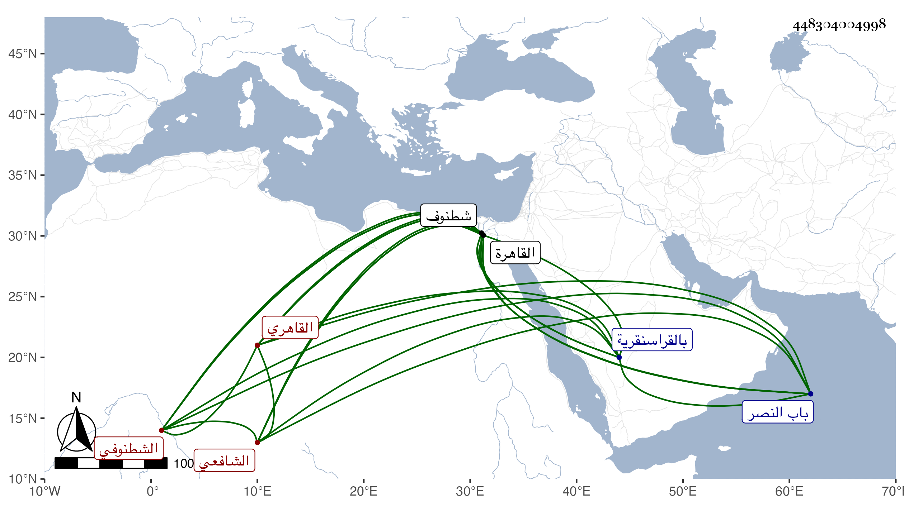

0902Sakhawi.DawLamic.ITO20230111-ara1.EIS1600.448304004998
Biography ID: 448304004998
928
إسماعيل بن عبد الله بن عثمان بن عبد الله المجد الشطنوفي القاهري الشافعي . ولد سنة ست وستين وسبعمائة وفي ظنه أنه بشطنوف ، وقرأ بها غالب القراءات ثم انتقل إلى القاهرة فأكمله وتلا به لنافع على الفخر الضرير ، وعرض التنبيه على الأبناسي وابن الملقن والبلقيني وغيرهم وأخذ الفقه عن الأبناسي والبيجوري وجماعة والنحو عن الشمس البوصيري ، وحج قبل القرن وسمع ابن أبي المجد وأم بالقراسنقرية بالقاهرة وسكنها حتى مات وتكسب بالشهادة بحانوت قرب جامع الحاكم وكتب على الاستدعاءات . ومات في يوم الأحد سادس ذي الحجة سنة ست وأربعين ودفن من الغد بتربة الصوفية خارج باب النصر .
